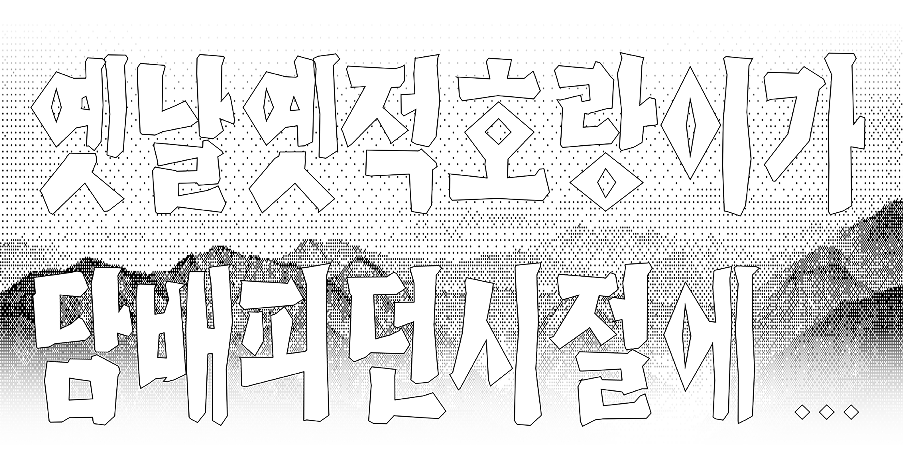

인간의 이기심으로 비롯된 생태계의 파괴와 오염으로 해마다 수만종의 생물들이 사라지고 있습니다.
.
어렸을 적 즐겨 읽었던 동화속에서 든든한 주인공으로 혹은 교활한 악역으로 등장하여 우리를 울고 웃게 해주며 교훈을 안겨주었던 동물들도 한반도에서 하나둘씩 자취를 감추고 있는 상황입니다.

떡 하나 주면 안잡아먹지
호랑이 ・ 멸종위기야생동물 1급
과거 한반도에 널리 서식하였지만 조선시대 말기에 총이 들여오면서부터 사냥이 시작되어 개체수가 감소하였다. 또한, 일제강점기 해수구제사업*으로 많은 호랑이가 사냥되며 개체수가 급감하여 현재는 절멸된 것으로 여겨진다.
* 일제강점기 시기 조선총독부가 "사람과 재산에 위해를 끼치는 해수(害獸)를 구제한다."라는 명분을 내세워 한반도 내 야생동물에 대한 체계적인 보전정책 없이 야생동물들의 퇴치와 포획을 주도 및 장려한 것을 이르는 표현
나무꾼님 사냥꾼이 자꾸 쫓아와요
대륙사슴 ・ 멸종위기야생동물 1급
동북아시아 전체에 널리 분포하고 있었으나, 밀렵과 서식처 파괴로 개체군이 빠르게 감소하고 있다. 조선시대부터 약재로 쓰이는 녹용과 녹각, 사슴피를 얻기 위한 사냥이 주요 위협요인으로 작용해왔으나, 대륙사슴 야생개체의 절멸은 1940년대 일제강점기의 해수구제 사업 이후 이다. 현재 남한에 서식하던 야생 대륙 사슴은 멸종된 상태이다.
100일 동안 쑥과 마늘만을 먹고 버텨 사람이 되었고 그 이름을 웅녀로 칭한다.
반달가슴곰 ・ 멸종위기야생동물 1급
과거 한반도 전역에 분포할 정도로 많은 개체가 서식하였으나,웅담을 노린 밀렵과 일제강점기 해수구제 사업 등으로 1,000마리 넘는 반달가슴곰이 포획되며 개체수가 급격히 줄어들었다. 이후로도 서식처 단절과 불법거래 등으로 거의 멸종직전까지 개체수가 급감하였다. 하지만 2000년대 이후 활발히 진행된 복원사업으로 현재 지리산과 수도산 등에서 야생개체군이 서식하고 있다.
그런데 할머니, 입에는 왜이렇게 뾰족뾰족한 이가 나있어요?
늑대 ・ 멸종위기야생동물 1급
사람들과 농가에 피해를 준다는 이유로 이루어진 대대적인 포획과 사냥(game species), 먹이 생물종의 감소로 분포가 빠르게 감소하였다. 이후 1997년 서울대공원의 마지막 늑대가 폐사하며 더 이상 남한에서의 야생 늑대 서식은 발견되지 않고 있다.
넌 내 입이 짧은 줄 알면서 왜 긴병에다 음식을 담아놓았니?
여우 ・ 멸종위기야생동물 1급
과거에는 한반도에서 제주도와 울릉도를 제외한 전역에 분포하였으나 서식지 파괴 및 쥐잡기 운동에 따른 2차 피해로 인해 야생개체가 멸종된 것으로 추측된다. 2012년부터 현재까지 소백산국립공원을 중심으로 복원 사업을 진행하여 야생에서 서식 중이다.
넌 내 부리가 긴 줄 알면서 왜 접시에 음식을 담아 놓았니?
두루미 ・ 멸종위기야생생물 1급
두루미의 번식지의 경우 개발 등의 압력으로 서식지가 점차 감소하고 있다. 월동지의 경우 민간인통제지역의 면적 변화, 댐건설로 인한 잠자리 소실, 갯벌 매립, 해안 지역의 개발, 농경지의 감소 등이 두루미의 서식을 위협하고 있다.
서식지파괴포획과 사냥먹이생물종감소녹용웅담불법거래갯벌매립농경지감소댐건설해안지역개발
.
만약 신이 존재한다면 결코 구원받지 못할 생물이 있다. 바로 인간이다.
인간은 자신의 욕심과 이기를 위해서라면 어떤 생물이든 가리지 않고 씨를 말려왔다.
동화 속 동물들을 포함하여 현재 우리와 함께 살아 숨쉬는 자연의 존재들이 인간의 욕심으로 인해 역사속으로 영원히 사라지고 있습니다.
.
이러한 끝이 없는 생태계 파괴의 상황에서 우리가 동물에게 요구하는 불필요한 욕심에 대해 한번쯤은 멈춰서서 생각해보는 시간이 필요하지 않을까요.